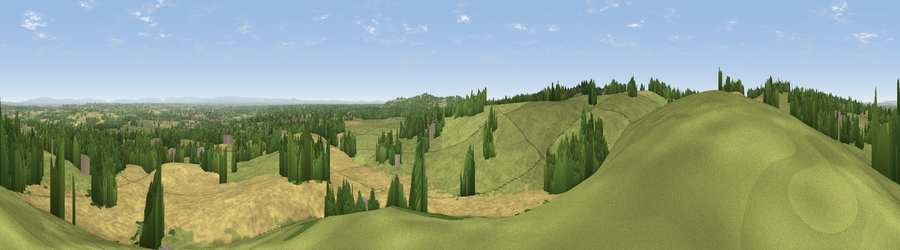

Viewpoint near Kingsley
#8447 in England · top 25% of its area beats it · near KingsleyThe view, rendered

A 360° render of this exact spot computed from the terrain model, tree cover and land cover — summer colours, afternoon light, calibrated against photographs of famous viewpoints. Real trees, hedges and buildings will differ in detail.
The panorama
Grey silhouette: terrain skyline in each direction (720 bearings, Earth curvature and refraction included). Dashed green: skyline with trees (+15 m) and buildings (+8 m) as obstacles. Blue strip: how far the ground is visible on each bearing.
Where the view opens
Wedge length = distance to the farthest visible ground on that bearing (vegetation-aware). Rings at 10, 25 and 50 km.
What fills the view
49% grassland · 34% cropland · 14% woodland · 2% built-up
Angular shares of the visible panorama (visual magnitude), not map area. Landscape diversity 0.47 (0–1 Shannon).
Key numbers
More beautiful places nearby
The staircase of upgrades: each row has a higher view potential than everything closer. Driving times are estimates from straight-line distance, calibrated against real road routing — check an actual route before setting out.
| Place | Direction | Drive | Score |
|---|---|---|---|
| Birch Hill | WSW · 1 km | ~4 min | 66.2 |
| Viewpoint near Overton | NW · 2 km | ~5 min | 70.7 |
| Viewpoint near Overton | NNW · 2 km | ~6 min | 72.3 |
| Beacon Hill | NNW · 3 km | ~7 min | 77.3 |
| Viewpoint near Harthill | S · 19 km | ~33 min | 80.5 |
| White Brow | NNE · 40 km | ~60 min | 82.9 |
| Viewpoint near Halfway House | SSW · 65 km | ~88 min | 83.3 |
| Viewpoint near Little Wenlock | S · 66 km | ~89 min | 84.2 |
53.26253, -2.69763 · source: screening · position refined by local search. Computed location — check access rights before visiting.